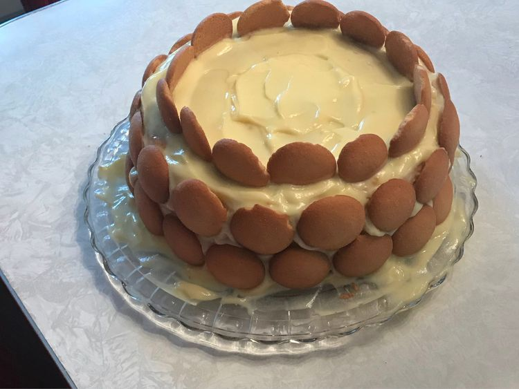

Home
Banana Pudding Cake

Source: AllRecipes
Description
This cake is a very moist banana cake that's easy to make with banana pudding, cake mix, and bananas. It's a family favorite! The cake can also be baked in a 9x13 pan or an angel food cake pan. It travels well to potlucks or picnics.
Ingredients
- 1 (15.25 ounce) package yellow cake mix
- 1 (3.5 ounce) package instant banana pudding mix
- 4 large eggs
- 1 cup water
- ¼ cup vegetable oil
- ¾ cup mashed bananas
- 2 cups confectioners' sugar
- 2 tablespoons milk
- 1 dash vanilla extract
- ½ cup chopped walnuts (Optional)
Directions
- Preheat the oven to 350 degrees F (175 degrees C). Grease and flour a 10-inch Bundt pan.
- Stir cake mix and pudding mix together in a large bowl. Make a well in the center and pour in eggs, water, oil and mashed banana. Beat on low speed until blended. Scrape bowl, and beat 4 minutes on medium speed. Pour batter into prepared pan.
- Bake in the preheated oven until a skewer inserted into the cake comes out clean, about 50 to 55 minutes. Let cool in pan for 10 minutes, then turn out onto a wire rack and cool completely.
- To make the glaze: Combine confectioners' sugar, milk and vanilla in a small bowl. Whisk until smooth and a drizzling consistency. When cake is cooled, drizzle icing over cake with a zigzag motion. Sprinkle chopped nuts over wet icing if desired.